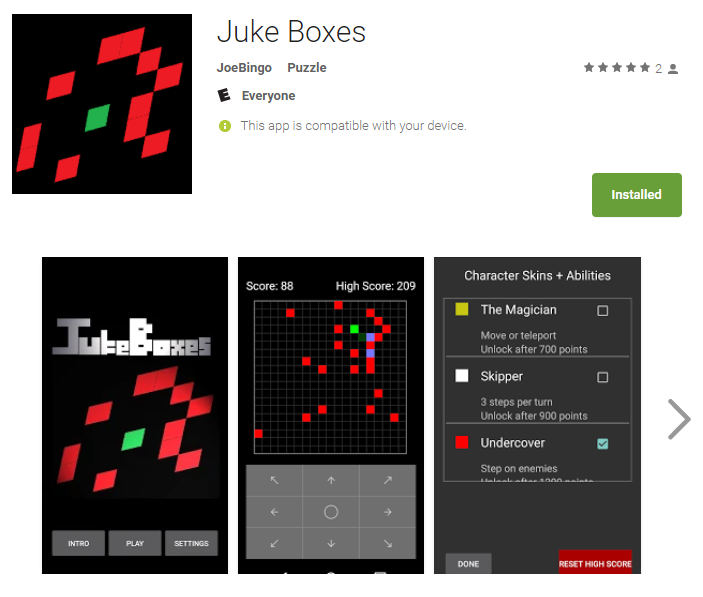
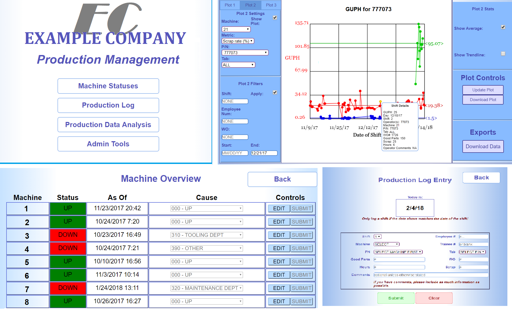

Projects Overview
Below are some examples of projects I've undertaken which demonstrate the type of work I enjoy
and with which I have considerable experience.
|
Software Simulations
I have extensive experience creating software to run physical simulations. From modeling the field properties of electromagnetic coil geometries to writing the scripts that power this website's 3D graphics, I enjoy applying physics and math to build up solutions to computational challenges from fundamental principles. Featured at right are a magnetic field map for a solenoid, a snapshot of a wire winding around a spinning core, and a simulation of the peaks of a 2D wavefunction in an infinite box potential responding to a time-dependent perturbation. Try out and/or view the code for a simple magnetic field simulator I made. |

|
|

|
Android Mobile Apps
I recently began mobile app development primarily as a hobby creating puzzle-based games. Juke Boxes is my first creation and available for free on the Google Play Store. Since then I've deepened my experience with Android's API's and began building apps to interface with custom software and devices. For example, I've written an app to interface with production monitoring software I wrote for my employer as well as an app to interface with a homemade Arduino-based security system. |
|
Node.js and Javascript Powered Software
I designed and fielded a custom, web-based production management system. It includes features to enable logging of production shifts, plotting and basic statistical analysis of production data, real-time monitoring of machine statuses, and scheduling automatic email notifications based on desired events. It also includes a cool feature where the host server periodically analyzes each batch of new log entries against their historical values and compiles a list of outliers into a production data summary that it emails to managers on a daily basis. The system is hosted on a LAN via Node.js. A mock up is shown at right, with all fictional names and values. |

|

|
Custom Device Electronics
I've built just over a dozen machine controllers for manufacturing lines, all implementing microcontrollers running custom software I wrote for each application (not pictured, since they are property of my employer). I have also applied my controller design experience to my own personal projects, including a temperature controlling thermostat at my home (a prototype version is shown at left). |